Devices (Android · iOS · Web)
Landscape only on every device (RT-106). One layout: CanvasScaler 1920×1080, match height; everything placed inside Screen.safeArea (SafeAreaFitter). Orange hatching = unsafe (notch, punch-hole, home indicator); blue dashes = safe area.
Orientation lock
- iOS / Android: Player Settings → Resolution and Presentation → Default Orientation Auto Rotation with only Landscape Left and Landscape Right allowed (Android manifest ends up as
sensorLandscape). Portrait never shows. - WebGL desktop: fixed 16:9 canvas in the
GidiFullscreentemplate;AdaptiveCanvasMatchre-applies the match on resize. - WebGL on a phone: browsers can't hard-lock. When held upright, show the rotate prompt below (no portrait layout); in fullscreen, also try
screen.orientation.lock("landscape"). PWA manifest sets"orientation": "landscape". - Done: the landscape lock is in the build (parent repo PR #9, merged to main).
Safe-area templates
| Device | Pixels | Insets (typical) | Safe area |
|---|---|---|---|
| iPhone 15/16 Pro · 2556×1179 @3x (852×393 pt) | 2556×1179 | L 177 · R 177 · T 0 · B 63 | 2202×1116 |
| Android 20:9 punch-hole · 2400×1080 (~2.75x) | 2400×1080 | L 110 · R 0 · T 0 · B 48 | 2290×1032 |
| iPad 11" · 2388×1668 @2x (1194×834 pt) | 2388×1668 | L 0 · R 0 · T 48 · B 40 | 2388×1580 |
| Desktop / WebGL · 1920×1080 browser viewport | 1920×1080 | L 32 · R 32 · T 32 · B 32 | 1856×1016 |
Inset values are typical for each class; Android cutouts differ per model, so always read Screen.safeArea. Touch controls: PICK UP bottom-left and d-pad bottom-right, both inside the safe area; minimum touch target 144 px (48 dp).

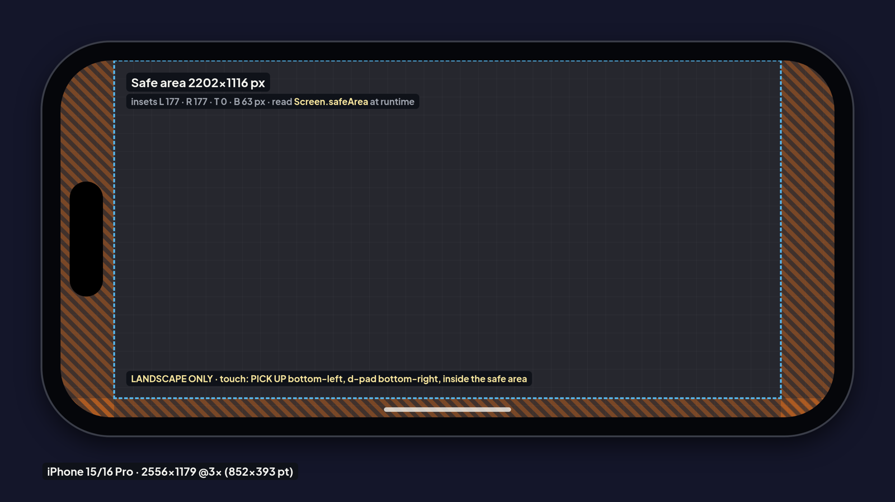

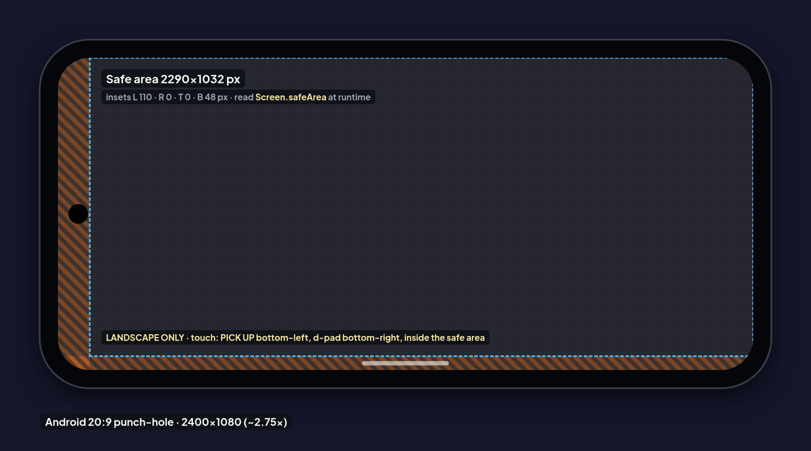

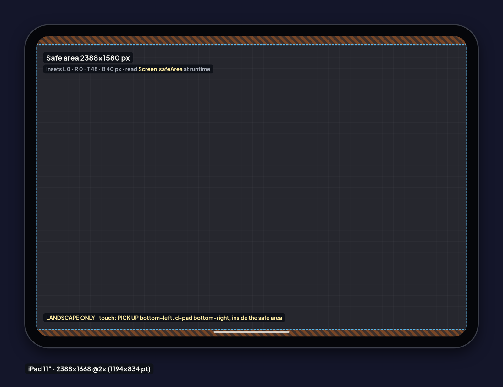

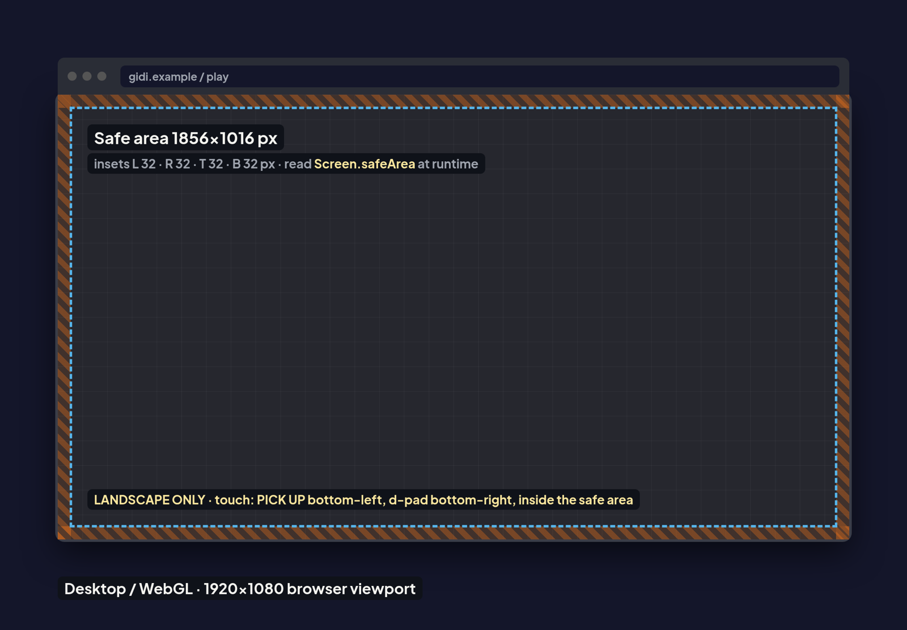
Tablet 4:3: two-row HUD
Matching height gives a 1440×1080 reference canvas on 4:3, and the one-row HUD needs about 1,750 px. So when the safe-area aspect is under 1.5 the HUD splits into two rows: level card over the stock panel on the left (560 px column), and the wallet, lives, Stats and Pause on the right as usual. The area right of row 2 stays clear so the far curb is still visible. Full spec: HUD_Landscape_Spec.md § Tablet 4:3.

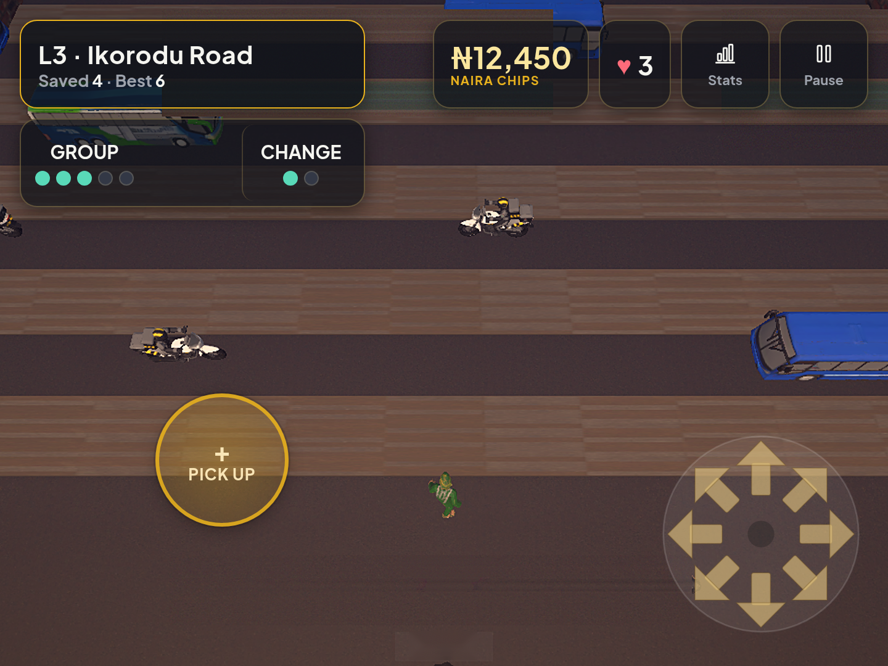

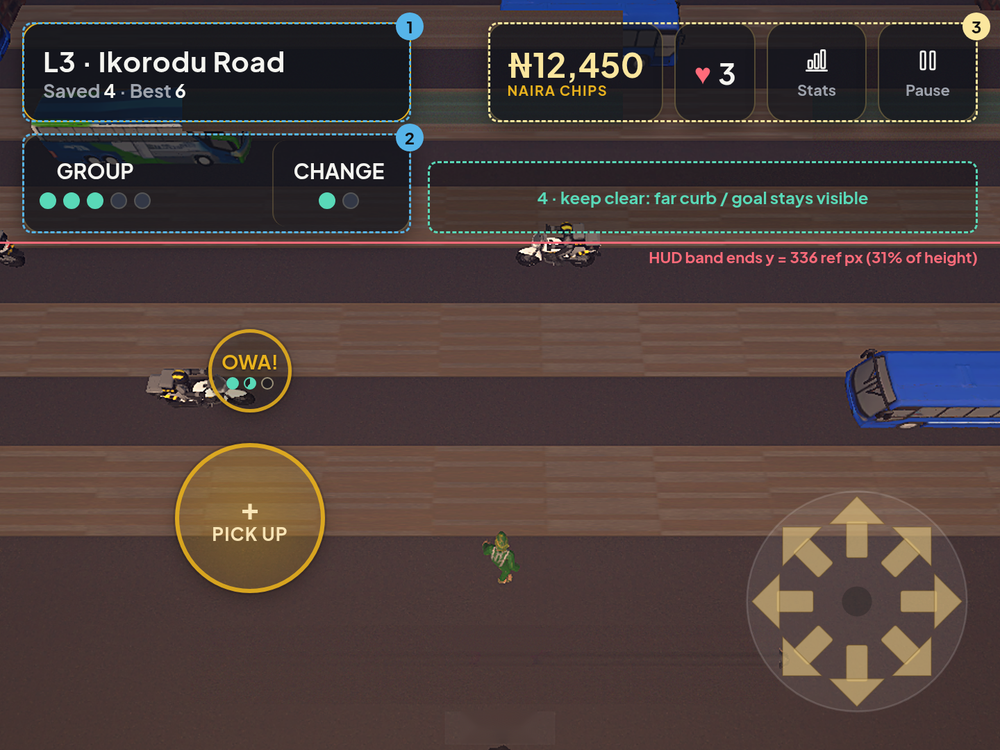
Device-framed mockups

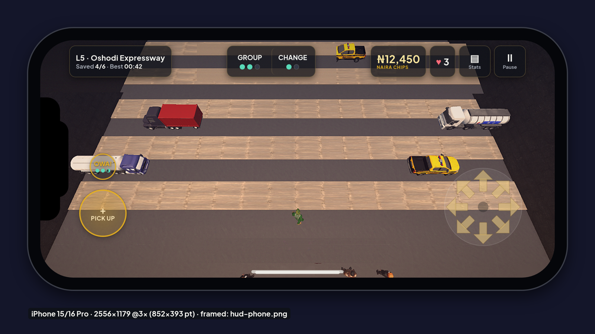

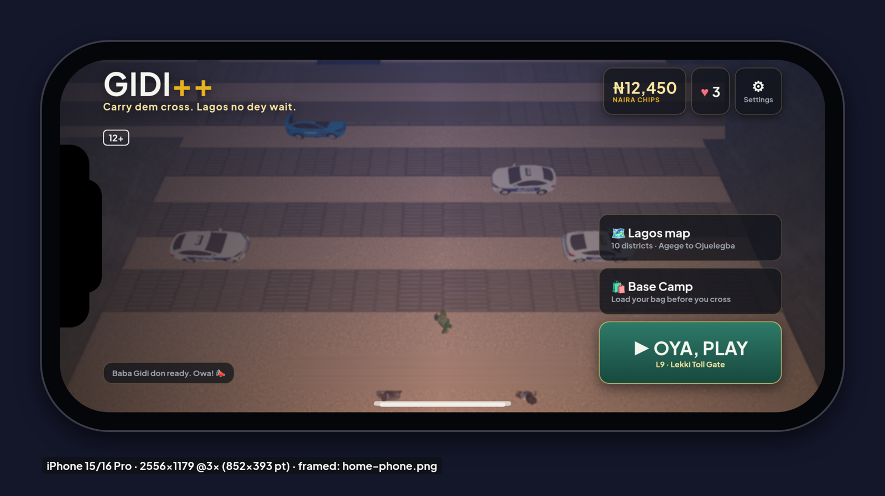

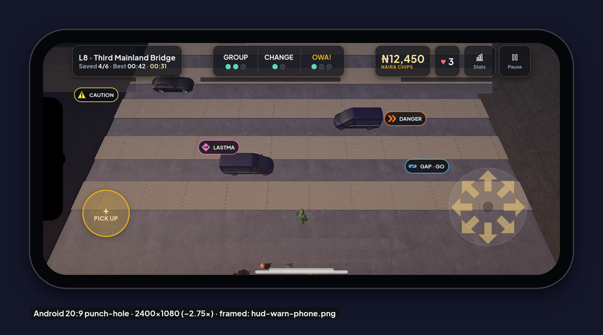

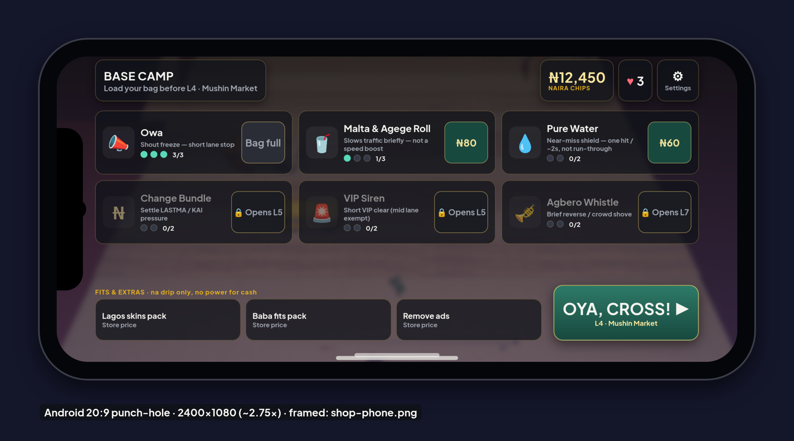

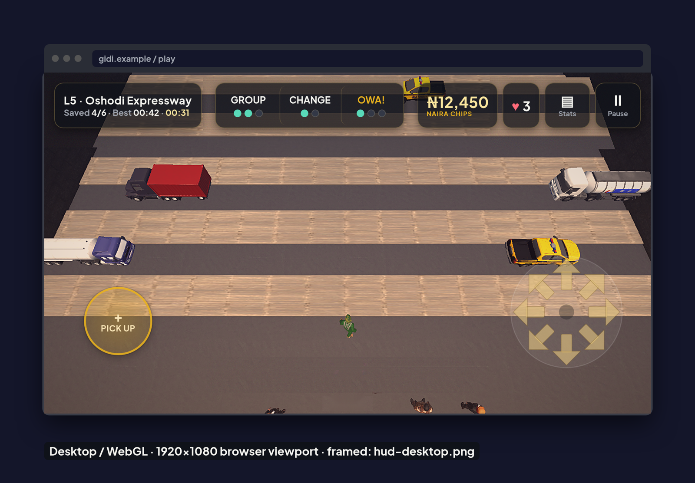

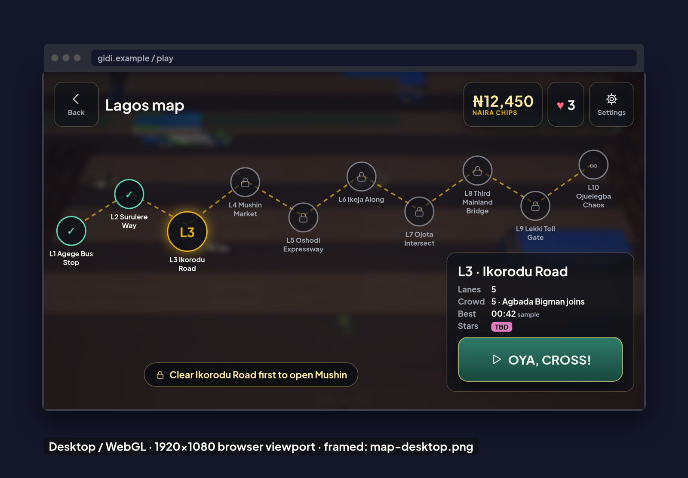